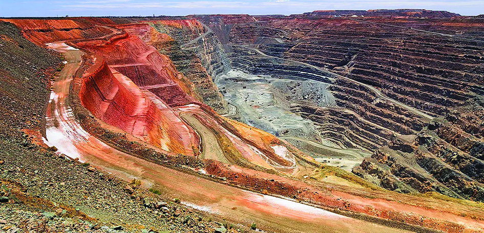
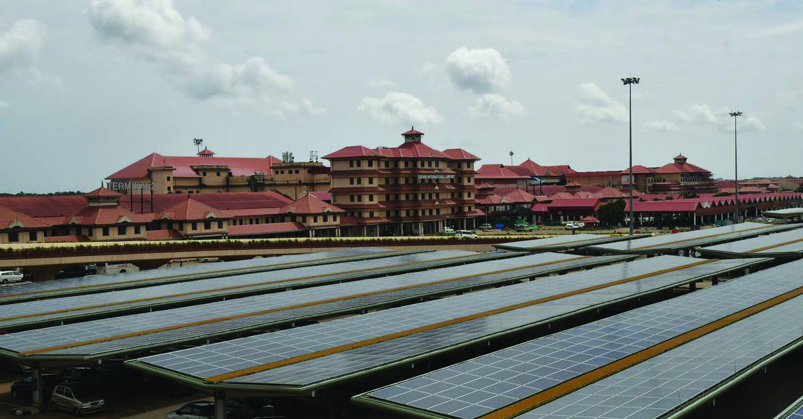
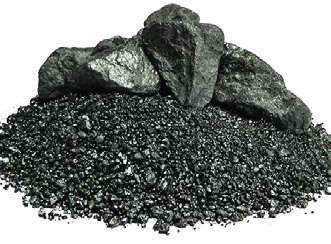
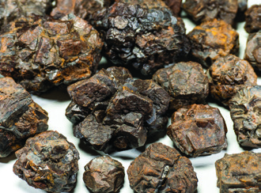
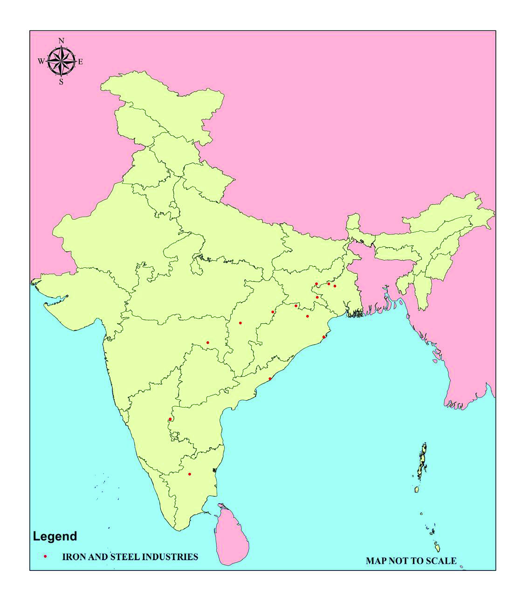
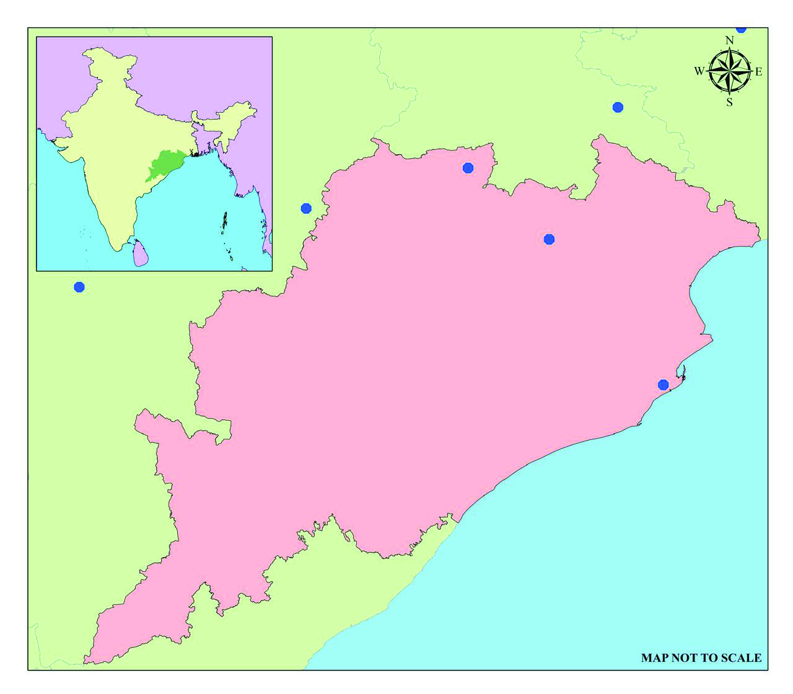
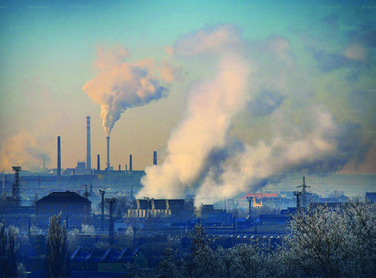
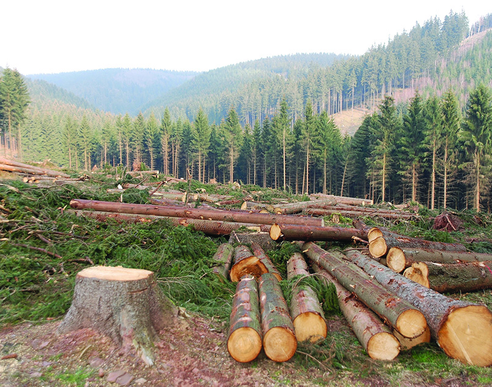
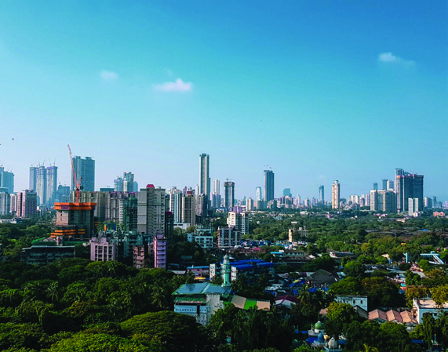

വിിഭവ വിിനിിയോോഗവുംc
സുുസ്ഥിിരതയുംc
6
യൂണിിറ്റ്്
മുുകളിിൽ കൊ�ൊടുുത്തിിരിിക്കുുന്ന ചിിത്രംം നിിരീക്ഷിിക്കൂ.
ഇന്ത്യയയിിലെ ഏറ്റവുംം� പഴക്കമുുള്ളതുംം� വലിിപ്പമേ�റിിയതുുമാായ സ്വവർണ്ണഖനിിയാാണിിത്. 1804ൽ ജോzോൺ
വാാറ
ൻ ബ്രിിട്ടീീഷ്് ഗവൺമെെന്റിിനുവേ�ണ്ടിി വിഭവ ഭൂപടം നിിർമ്മിിച്ചതോ�ോടെെ കർണ്ണാാട
കത്തിിലെ ഉറിിഗം
എന്ന ഗ്രാാമവുംം� അതിനോ�ോടനുുബന്ധിിച്ച പ്രദേേശവുംം� സ്വവർണ്ണത്തിിന്റെ� നാാടാാണെ�ന്ന് കണ്ടെ�ത്തിി. ഇതാാണ്
്
ചിിത്രംം 6.1 l കോsോളാാർ സ്വവർണ്ണഖനിി
Page 87

Page 88

88
കെs.ജിി.എഫ്്. (കോsോളാാർ ഗോോuോൾഡ്് ഫീൽഡ്്) എന്ന്് പുുനർനാാമകരണംം
ചെെxയ്യപ്പെെƀട്ടത്്. 1880 മുതൽ 1956 വരെെ 800 ടണ്ണിിലധിികം സ്വവർണ്ണം
ഉൽപാാദിിപ്പിച്ചുംം�, കോsോളാാർ ഗോോuോൾഡ്് ഫീൽഡ്് (കെs.ജിി.എഫ്്.) ലോ�ോകത്തിിന്റെെź
സ്വവർണ്ണഭൂൂപടത്തിിൽ ഇന്ത്യയയുുടെെ സ്ഥാാനം രേ�ഖപ്പെെƀടുത്തുകയുംം� ചെെxയ്തുു.
സ്വവർണ്ണനിിക്ഷേäപം കൊsൊണ്ടാാണ്് കർണ്ണാാടകയിിലെ� കോsോളാാർ ഇന്ത്യയയിലെ�
ഏറ്റവുംം� പഴക്കമുള്ള വ്യാാ�വസാായിിക നഗരങ്ങളിൽ ഒന്നാായി
ി മാാറിിയത്്.
ഇന്ത്യയയുുടെെ സമ്പദ്വ്യവസ്ഥയിിലുംം� ജനജീവിതത്തിിലുംം� സ്വവർണ്ണത്തിിന്റെെź
പ്രാാധാാന്യംം� തിരിച്ചറിിഞ്ഞിില്ലേƽ.
സ്വവർണ്ണം ഏതെ�ല്ലാംDZ ആവശ്യയങ്ങൾക്കുവേ�ണ്ടിിയാാണ് നാംം ഉപയോ�ോഗിക്കുന്നത്്?
l വൈൈദ്യു�ുത ഉപകരണങ്ങളുടെെ നിർമ്മാാണംം
l ഔഷധ നിർമ്മാാണംം
l
സ്വവർണ്ണത്തിിന് പുുറമെെ നമ്മുടെെ ദൈൈനംംദിിന ജീവിതത്തിിൽ
ആവശ്യയങ്ങൾ നിറവേ�റ്റാാൻ ഉപയോ�ോഗിക്കുന്ന വസ്തുുക്കൾ
ഏതെ�ന്ന്് പറയാാമോ�
ോ?
l
l
സ്വവർണ്ണം, ഇരുമ്പ്, വെ�ള്ളി തുടങ്ങിയവ പ്രകൃതിയിൽ നിന്നുമാാണ്
ലഭ്യമാാകുന്നത്്. ഇതുകൂടാാതെ� പ്രകൃതിയിൽ നിന്നുംം� ലഭിക്കുന്ന
വാായുു, ജലംം, മണ്ണ് തുടങ്ങിയ ഭൗതികവസ്തുുക്കളും�ം നമ്മുടെെ
ആവശ്യയങ്ങൾ പൂർത്തീകരിക്കാാനാായി ഉപയോ�ോഗിക്കുന്നുണ്ട്.
ഇത്തരത്തിിൽ ആവശ്യയങ്ങൾ നിറവേ�റ്റാാൻ പ്രാാപ്തവുംം�
പ്രകൃതിയിൽ ലഭ്യവുംം� സാാങ്കേÿതികമാായി പ്രാാപ്യവുംം�
സാംംസ്കാാരികമാായി സ്വീീ�കാാര്യവുമാായ ഏതൊ�ാന്നിിനേ�യുംം�
വിഭവംം എന്നുവിളിക്കാംം. ജലംം, വാായുു, മണ്ണ് മുതലാായ
ഭൗതികവസ്തുുക്കൾ മാാത്രമല്ല അറിിവ്, ആരോ�ാഗ്യം�ം മുതലാായ
അഭൗതികവസ്തുുക്കളും�ം വിഭവങ്ങളിൽ ഉൾപ്പെെƀടുന്നു. മനുഷ്യന്റെെź
ആവശ്യയങ്ങൾക്കനുസരിിച്ച് സമയവുംം� സാാങ്കേÿതികവിദ്യയുംം�
ഉപയോ�ോഗിച്ച് ഏതൊ�ൊരുു വസ്തുുവിനെ�യുംം� വിഭവമാാക്കി മാാറ്റാംDZ.
ഇത്് കൂടാാതെ� മനുഷ്യരുടെെ കഴിവുകളെ�യുംം� വിഭവമാായി
ഉപയോ�ോഗിക്കാാറുുണ്ട്. ഇതിനെ� മാാനവവിഭവമെെന്ന്് വിളിക്കുന്നു.
ഉദ്ഭവത്തിിന്റെെź അടിസ്ഥാാനത്തിിൽ വിഭവങ്ങളെ� പ്രധാാ
നമാായുംം�
പ്രകൃതിവിഭവങ്ങളെ�ന്നുംം� മനുഷ്യനിർമ്മിതവിിഭവങ്ങളെ�ന്നുംം�
തരംംതിരിക്കാംം.
മാാനവവിഭവം
മനുുഷ്യയർ തന്റെź കഴിിവ്്,
നൈൈപുുണിി, സാാങ്കേÿതിവിദ്യയ
എന്നിിവ പ്രയോാജനപ്പെെƀടുുത്തിി
ധാാരാാളംം വിഭവങ്ങൾ
രൂപപ്പെെƀടുുത്തുന്നതിിനാൽ
മനുുഷ്യയരേ�യുംം� വിഭവമാായി
പരിിഗണിിക്കാാവുന്നതാാണ്.
അമ്മേേƣ...
മനുുഷ്യയരും�ം ഒരു
വിഭവമാാണോ�
ാ?
അതേ�
മോ�ാളേ�,
l ചിിത്രംം 6.2
Page 89


89
വിിഭവ വിിനിിയോോഗവുംc
സുുസ്ഥിിരതയുംc
വിിഭവങ്ങൾ
പ്രകൃതിിവിിഭവങ്ങൾ
പ്രകൃതിയിൽ നിന്നുംം� ലഭിക്കുന്ന വിഭവങ്ങൾ
ഉദാാ: വാായുു, ധാാതുക്കൾ
മനുുഷ്യയനിർമ്മിിത വിിഭവങ്ങൾ
മനുഷ്യർ നിർമ്മിക്കുന്ന വിഭവങ്ങൾ
ഉദാാ: റോ�ോഡ്്, യന്ത്രങ്ങൾ
പ്രകൃതിവിഭവങ്ങളെ�ല്ലാംDZ നമുക്ക് യഥേഷ്ടംം ഉപയോ�ാഗിിക്കാാൻ കഴിയുുമോ�ാ?
എന്തുകൊsാണ്ടാാണ്് എല്ലാാ വിഭവങ്ങളും�ം ഒരേ� പരിിഗണനയോ�ാടെെ ഉപയോ�ാഗിി
ക്കാാൻ സാാധിിക്കാാത്ത്്?
l എല്ലാായിടത്തുംം� ലഭ്യമല്ല
l ഉപയോ�ാഗിിക്കുന്തോ�ാറും�ം തീർന്നുപോ�ാകുന്നു
l
പ്രകൃതി വിഭവങ്ങളുടെെ ലഭ്യതയുംം� പുുനഃസ്ഥാാപനശേ�ഷി
ിയുംം� വ്യത്യസ്ത
മാാണ്. പുുനഃസ്ഥാാപനശേ�ഷി
ിയുുടെെ അടിസ്ഥാാനത്തിിൽ വിഭവങ്ങളെ�
രണ്ടാായിി തരംംതിരിക്കാംം.
1. പുുനഃസ്ഥാാപിക്കാാൻ കഴിിയുുന്ന വിിഭവങ്ങൾ
(Renewable Resources)
ഉപയോ�ോഗാാനന്തരംം തീർന്നുപോ�ോകാാത്തതുംം� വീണ്ടുംം�
ഉപയോ�ോഗയോ�ോഗ്യവുമാായ വിഭവങ്ങളാാണ്് പുുനഃസ്ഥാാപിി
ക്കാാൻ കഴിയുുന്ന വിഭവങ്ങൾ. പ്രകൃതിയിൽ തുടർച്ചയാായി
ി
ഉൽപാാദിിപ്പിക്കപ്പെെƀടുന്നതുംം� മനുഷ്യന് എപ്പോോƀോഴും�ം സുലഭ
മാായി ലഭിക്കുന്നതുുമാായ വിഭവങ്ങളാാണിിവ. സൂര്യപ്രകാാശം
ം,
കാാറ്റ്, തിരമാാല എന്നിവ ഇത്തരംം വിഭവങ്ങൾക്ക് ഉദാാഹ
രണങ്ങളാാണ്്.
2. പുുനഃസ്ഥാാപിക്കാാൻ കഴിിയാത്ത വിിഭവങ്ങൾ
(Non-Renewable Resources)
ദശലക്ഷക്കണക്കിന് വർഷങ്ങൾ കൊsൊണ്ട്് രൂപപ്പെെƀട്ടതുംം�
ഉപയോ�ോഗത്തിിനനുസരിിച്ച് അളവ്് കുറയുുന്നതുുമാായ
വിഭവങ്ങളാാണ്് പുുനഃസ്ഥാാപിിക്കാാൻ കഴിയാാത്ത വിഭവങ്ങൾ.
ഇരുമ്പ്, സ്വവർണ്ണം, കൽക്കരി, പെ�ട്രോോğോളിയം തുടങ്ങിയവ
ഇത്തരംം വിഭവങ്ങൾക്ക് ഉദാാഹരണങ്ങളാാണ്്.
ചിിത്രംം 6.3 l കൊ�ൊ
ച്ചിി അന്താാരാാഷ്ട്ര വിമാനത്താവളംം
സമ്പൂൂർണ്ണ
സൗരോോർജ
വിമാാനത്താാവളംം
സമ്പൂൂർണ്ണമായി സൗരോ�ോ
ർജം
ഉപയോോഗിച്ച് പ്രവർത്തിിക്കുന്ന
ലോോകത്തിിലെെ ആദ്യയത്തെ�
വിമാനത്താവളമാാണ് കൊ�ൊ
ച്ചിി
അന്താാരാാഷ്ട്ര വിമാനത്താവളംം.
പൊ�ൊതു
ുമേ�ഖലാ-സ്വകാര്യമേ�ഖല
പങ്കാളിത്തത്തോ�ോടെെ
തുടങ്ങിയ
ഇന്ത്യയിലെെ ആദ്യയത്തെ�
വിമാനത്താവളമാാണിിത്.
Page 90


90
മഹാാരാാഷ്ട്രയിലെെ മും�ംബൈൈ
തീരത്തുനിിന്നുംം�
160 കിലോോോമീറ്റർ അകലെെ അറബിക്കടലി
ിൽ
സ്ഥിിതിചെ�യ്യുുന്ന വലിിയ എണ്ണപ്പാാടമാാണ് മും�ംബൈൈ
ഹൈൈ. ഇന്ത്യയിലെെ ഏറ്റവുംം� വലിിയ കടൽത്തീര
എണ്ണ ഖനന കേsന്ദ്രങ്ങളിലൊൊന്നാാണിിത്. 1974-ൽ
കണ്ടെെĬത്തിിയ ഈ എണ്ണപ്പാാടത്തിിന്റെź മേ�ൽനോ�ോട്ടംം
വഹി
ിക്കുന്നത്് ഓയിൽ ആൻഡ്് നാാച്ചുറൽ ഗ്യാ�ാസ്
കോsോർപ്പറേ�ഷൻ (ONGC) ആണ്.
മുംംബൈൈ ഹൈൈ
(ബോം�ംബെ� ഹൈൈ
)
ചിിത്രംം 6.4 l മും�ംബൈൈ
ഹൈൈ
ജലംം, ലോ�ോഹ
ങ്ങൾ, സൗരോാർജം, കൽക്കരി, കാറ്റ്്, പെെട്രോğാളിയംം
തന്നിിരിക്കുന്ന വിഭവങ്ങളിൽ നിിന്നുംം� പുുനഃസ്ഥാാപി
ിക്കാാൻ കഴിിയുന്നവയുംം�
പുുനഃസ്ഥാാപി
ി
ക്കാാൻ കഴിിയാാത്തവയുംം� തിരിച്ചറിിഞ്ഞ്് പട്ടികപ്പെെƀടുുത്തുക.
പുുനഃസ്ഥാാപിക്കാൻ കഴിിയുുന്നവ
പുുനഃസ്ഥാാപിക്കാൻ കഴിിയാത്തവ
l
l
l
l
l
l
മാാനവപുുരോ�ോഗതിയുടെെ വിവിധ ഘട്ടങ്ങളിിൽ ഇരുമ്പുംം� ചെ�മ്പുംം� പോ�ാലുള്ള
ധാാതുവിഭവങ്ങൾ പ്രധാാന പങ്കുവഹി
ിച്ചിട്ടുണ്ടെ�ന്ന്് മുുൻക്ലാാസുുകളിിൽ
നിിങ്ങൾ തിരിിച്ചറിിഞ്ഞിിട്ടുണ്ടല്ലോƽാ.
ഇത്തരംം വിഭവങ്ങൾ പുനഃസ്ഥാാപിക്കാാൻ കഴിയാാത്തവയാാണ്
്. ഒരു പ്രദേേശ
ത്തിിന്റെ� സമ്പദ്വ്യയവസ്ഥയെ�
സ്വാാ�ധീീനിിക്കുുന്ന ഇത്തരംം വിഭവങ്ങളെ�ക്കുുറിിച്ച്
നമുുക്ക് ചർച്ച ചെ�യ്യാംം.
ധാാതുുക്കൾ (Minerals)
പ്രകൃത്യാാ�ൽ രൂപപ്പെ�ട്ടതുംം� രാാസ
-ഭൗതിക സവിിശേ�ഷതകളോ�ോടുുകൂടിയതുു
മാായ
ജൈൈവ-അജൈൈവ പദാാർഥങ്ങളാാണ് ധാാതുക്കൾ. പെ�ട്രോğോളിിയം,
ഇരുമ്പയിിര്, ബോ�ോക്സൈൈറ്റ്് തുുടങ്ങിയവ ഇതിന് ഉദാാഹരണ
ങ്ങളാാണ്.
ഇത്തരംം ധാാതുക്കൾ നമുുക്ക് നേ�രിിട്ട് ഉപയോ�ാഗിക്കാാൻ സാാധിിക്കുുകയിില്ല.
ഭൂവൽക്കത്തിിൽ അയിിരിിന്റെ� രൂപത്തിിൽ കാാണപ്പെ�ടുുന്ന ധാാതുക്കൾ,
ഖനനത്തിിനുംം� സംസ്കരണ
പ്രക്രിിയയ്ക്കുംം� ശേ�ഷംം മാാത്രമാാണ്
് ഉപയോ�ാഗയോ�ാഗ്യ
മാാകുന്നത്. ഖനനത്തിിലൂടെെ മാാലിന്യങ്ങൾ കലർന്ന അസംസ്കൃത
രൂപത്തിിലാാണ് ധാാതുക്കൾ ഭൂവൽക്കത്തിിൽ നിിന്നുംം� ലഭിക്കുുന്നത്.
ഇതിനെ� അയിിര് എന്നുവിളിിക്കുുന്നു. ഈ അയിിരിിനെ� വിവിധ
ഭൗ�മോ�ോപരിിതലത്തിിൽ
നിിന്നോ�ോ ഭൗ�മാാന്തർ
ഭാാഗത്തുനിിന്നോ�ോ
മൂല്യവത്താായ
വസ്തുുക്കൾ
കണ്ടെെĬത്തിി
പുുറത്തെ�ടുുക്കുന്ന
പ്രക്രിിയയാാണിിത്.
ഖനനത്തെ�
ഉപരിിതല ഖനനംം,
ഭൂഗർഭ ഖനനംം
എന്നിിങ്ങനെ�
തരംതിരിച്ചിിരിക്കുന്നു.
ഖനനം
Page 91

91
വിിഭവ വിിനിിയോോഗവുംc
സുുസ്ഥിിരതയുംc
സംസ്കരണ
പ്രക്രിിയകളിിലൂടെെ മാാത്രമേ� മൂല്യവത്താായ
ധാാതുക്കളാാക്കി
ി
മാാറ്റുവാാൻ സാാധിിക്കുുകയുള്ളൂ.
പെെട്രോğാളിയംം, ഇരുുമ്പയിിര്, ബോ�ോക്സൈൈറ്റ്്
തന്നിിരിക്കുന്ന ധാാതുക്കളിിൽ നിിന്നുംം� ലോാഹത്തിിന്റെź അംശമുള്ള ധാാതുക്കളെ�
തിരിച്ചറിിയുക.
l
l
ഇതിൽ നിിന്നുംം� ചിില ധാാതുക്കളിിൽ ലോോഹത്തിിന്റെ� അംശമുുള്ളതാായിി
തിരിിച്ചറിിഞ്ഞിില്ലേേƽ. അടങ്ങിയിിരിിക്കുുന്ന പദാാർഥങ്ങളുടെെയുംം� ഭൗതിക
സവിിശേ�ഷതകളുടെെയുംം� അടിസ്ഥാാനത്തിിൽ ധാാതുക്കളെ�
രണ്ടാായിി
തരംംതിരിിക്കാംം.
ഇരുമ്പിന്റെ�
അംശമുുള്ള ലോോഹ
ധാാതുക്കൾ
ഇരുമ്പിന്റെ�
അംശമില്ലാാത്ത
ലോോഹ ധാാതുക്കൾ
ജൈൈവ
ധാാതുക്കൾ
അജൈൈവ
ധാാതുക്കൾ
ധാാതുുക്കൾ
ലോോോഹ ധാാതുുക്കൾ
അലോോോഹ ധാാതുുക്കൾ
ലോോോഹധാാതുുക്കൾ (Metallic Minerals)
പ്രകൃതിയിിൽ സ്വാാ�ഭാാവികമാായിി കാാണപ്പെ�ടുുന്ന ലോോഹത്തിിന്റെ�
അംശമുുള്ളവയാാണ്
് ലോോഹധാാതുക്കൾ. സംസ്കരണ
പ്രക്രിിയയിിലൂടെെ
ലോോഹധാാതുക്കളിിൽ നിിന്നുംം� വേ�ർതിരിിച്ചെ�ടുുക്കുുന്ന ലോോഹം സാാധാാരണ
യാായിി കടുുപ്പമുുള്ളതുംം� തിളക്കമുുള്ളതുുമാാണ്. ബോ�ോക്സൈൈറ്റിിൽ
നിിന്നുംം� അലുമിനിിയം വേ�ർതിരിിച്ചെ�ടുുക്കുുന്നത് ഇതിനുദാാഹരണമാാണ്
്.
ഇരുമ്പിന്റെ� സാാന്നിധ്യത്തിിന്റെ� അടിസ്ഥാാനത്തിിൽ ലോോഹധാാതുക്കളെ�
രണ്ടാായിി തരംംതിരിിച്ചിരിിക്കുുന്നു. ഇവയുുടെെ സവിിശേ�ഷതകൾ എന്തൊ�ൊക്കെ�
യാാണെ�ന്ന് പരിിശോ�ോധിിക്കാംം.
ഇരുുമ്പിിന്റെź അംംശമുുള്ള ലോോോഹങ്ങൾ
(Ferrous minerals)
ഇരുുമ്പിിന്റെź അംംശമില്ലാാത്ത ലോോോഹങ്ങൾ
(Non-ferrous minerals)
l ചാാരനിിറത്തിിൽ കാാണപ്പെ�ടുുന്നു
l വ്യയത്യസ്ത നിിറങ്ങളിിൽ കാാണപ്പെ�ടുുന്നു
l കാാന്തിിക സ്വവഭാാവമുുള്ളവ
l കാാന്തിിക സ്വവഭാാവമിില്ലാാത്തവ
l ഭാാരം കൂടുുതൽ
l താാരതമ്യേ�േന
ഭാാരം കുറവ്്
Page 92





92
അലോോോഹധാാതുുക്കൾ (Non-Metallic Minerals)
ലോോഹത്തിിന്റെ� അംശമില്ലാാത്ത ധാാതുക്കളെ�
അലോോഹധാാതുക്കൾ
എന്നുപറയുുന്നു. അലോോഹധാാതുക്കൾക്ക് കാാഠിിന്യംം�, തിളക്കം, വഴക്കം
തുുടങ്ങിയ ഗുണങ്ങൾ താാരതമ്യേ�േന
കുറവാാണ്
്. ജൈൈവധാാതുുക്ക
ളെ�ന്നുംം� അജൈൈവധാാതുുക്കളെ�ന്നുംം� അലോോഹധാാതുക്കളെ�
രണ്ടാായിി
തരംംതിരിിച്ചിരിിക്കുുന്നു. കൽക്കരിി, പെ�ട്രോğോളിിയം പോ�ോലുള്ള ജൈൈവധാാതുുക്ക
ളിിൽ ജൈൈവിികഘടകങ്ങൾ അടങ്ങിയിിട്ടുണ്ട്. എന്നാാൽ ഗ്രാാഫൈൈറ്റ്്,
കളിിമണ്ണ് പോ�ോലുള്ള അജൈൈവധാാതുുക്കളിിൽ അജൈൈവിികഘടകങ്ങളാാണ്
അടങ്ങിയിിട്ടുള്ളത്.
തന്നിിരിക്കുന്ന ലോോോഹധാാതുക്കളുുടെെയുംം� അലോോോഹധാാതുക്കളുുടെെയുംം� ഉപയോോോഗം
കണ്ടെെĬത്തിി പട്ടിക പൂർത്തിിയാാക്കൂ.
ലോ�ോഹ
ധാാതുുക്കളുംംം ഉപയോ�ോഗവുംം�
അലോ�ോഹ
ധാാതുുക്കളുംംം ഉപയോ�ോഗവുംം�
l ഇരുമ്പ് - കെെsട്ടിടനിിർമ്മാാണം
l ഗ്രാാഫൈൈ
റ്റ് - പെ�ൻസിൽ നിിർമ്മാാണം
l സ്വവർണ്ണം -
l പെ�ട്രോോğോൾ -
l ചെ�മ്പ്് -
l കളിിമണ്ണ് -
lചിിത്രങ്ങൾ 6.5
ഇരുുമ്പയിിരുുകൾ
മാാഗ്നറ്റൈൈറ്റ്്
ലിമോ�ോണൈ�റ്റ്്
ഹേ�മറ്റൈൈറ്റ്
സിഡറൈൈറ്റ്
അടങ്ങിയിരിക്കുന്ന ഇരുമ്പിന്റെź
അടിസ്ഥാാന
ത്തിിൽ ഇരുമ്പയിിരിനെ� നാാലാായി
തരം തിരിക്കാം. മാാഗ്നറ്റൈൈറ്റ്് , ഹേ�മറ്റൈൈറ്റ്,
ലിമോ�ോണൈ�റ്റ്്, സിഡറൈൈറ്റ്. മാാഗ്നറ്റൈൈറ്റിിനെ�
കറുത്ത അയിര് എന്നുവിളിക്കുന്നു. മികച്ച
ഗുണനിിലവാാരമുുള്ള മാാഗ്നറ്റൈൈറ്റ്് തമിഴ്നാാട്,
കർണ്ണാാടകംം, ഝാാർഖണ്ഡ്്, ഗോ�ോവ, ആന്ധ്രാാപ്രദേ�ശ്്
തുടങ്ങിയ സംസ്ഥാാന
ങ്ങളിൽ കാാണപ്പെെƀടുുന്നു.
വൈൈവിിധ്യമാാർന്ന ധാാതുക്കളാാ
ൽ സമ്പന്നമാാണ് ഇന്ത്യയ. രാാജ്യത്തിിന്റെ�
ഭൂമിശാാസ്ത്ര പ്രത്യേ�േകതകൾ ധാാതുവൈൈവിിധ്യത്തിിന് കാാരണമാായിിട്ടുണ്ട്.
ഇന്ത്യയയിിലെ വിവിധ സംസ്ഥാാനങ്ങളിിൽ ധാാതുക്കൾ അസന്തുലിതമാായാാണ്
്
പ്രകൃതിയിിൽ വിതരണം
ം ചെ�യ്യപ്പെ�ട്ടിിരിിക്കുുന്നത്. ഇന്ത്യയയിിലെ ധാാതുനിിക്ഷേ�പ
ങ്ങളുടെെ വിതരണത്തെ�
പരിിചയപ്പെ�ടാംDZ. ഭൂപടം 6.6 ശ്രദ്ധിിക്കൂ.
Page 93

93
വിിഭവ വിിനിിയോോഗവുംc
സുുസ്ഥിിരതയുംc
ചിിത്രംം 6.6 l ഭൂപടംം
ഇന്ത്യയ
ഇന്ത്യയ
ധാാതുുവിിഭവങ്ങൾ
ധാാതുുവിിഭവങ്ങൾ
ലഡാാക്ക്്
ലഡാാക്ക്്
ജമ്മുു & കാാശ്മീീർ
ജമ്മുു & കാാശ്മീീർ
ഹിമാാചൽപ്രദേശ്
ഹിമാാചൽപ്രദേശ്
പഞ്ചാാബ്്
പഞ്ചാാബ്്
ഉത്തരാാഖണ്ഡ്്
ഉത്തരാാഖണ്ഡ്്
ഛണ്ഡീഗഢ്്
ഛണ്ഡീഗഢ്്
സിക്കിംംc
സിക്കിംംc
അസംം
അസംം
മേ�ഘാാലയ
മേ�ഘാാലയ
മണിിപ്പൂൂർ
മണിിപ്പൂൂർ
മിസോ�ോറാംDZ
മിസോ�ോറാംDZ
ത്രിിപുുര
ത്രിിപുുര
അരുുണാാചൽപ്രദേശ്
അരുുണാാചൽപ്രദേശ്
നാാഗാാലാാന്റ്
നാാഗാാലാാന്റ്
ബീഹാാർ
ബീഹാാർ
ഝാാർഖണ്ഡ്്
ഝാാർഖണ്ഡ്്
മധ്യപ്രദേശ്
മധ്യപ്രദേശ്
ഒഡിഷ
ഒഡിഷ
ഛത്തീസ്ഗഢ്്
ഛത്തീസ്ഗഢ്്
ഹരിയാാന
ഹരിയാാന
ന്യൂൂ� ഡൽഹി
ന്യൂൂ� ഡൽഹി
രാാജസ്ഥാാൻ
രാാജസ്ഥാാൻ
ഗോ�ോവ
ഗോ�ോവ
ആന്ധ്രാാപ്രദേശ്
ആന്ധ്രാാപ്രദേശ്
ആൻഡമാാൻ & നിിക്കോ�ോബാാർ
ആൻഡമാാൻ & നിിക്കോ�ോബാാർ
പുുതുുച്ചേăരി
പുുതുുച്ചേăരി
ലക്ഷദ്വീ�പ്്
ലക്ഷദ്വീ�പ്്
കേ�രളംം
കേ�രളംം
കർണ്ണാാടകംം
കർണ്ണാാടകംം
തമിഴ്നാാട്
തമിഴ്നാാട്
തെ�ല
ങ്കാാന
തെ�ല
ങ്കാാന
ദാാദ്ര & നാാഗർഹവേ�ലിി
ദാാദ്ര & നാാഗർഹവേ�ലിി
ദാാമൻ&ദിയുു
ദാാമൻ&ദിയുു
മഹാാരാാഷ്ട്ര
മഹാാരാാഷ്ട്ര
ഗുുജറാാത്ത്
ഗുുജറാാത്ത്
ഉത്തർപ്രദേശ്
ഉത്തർപ്രദേശ്
ബംംഗാാൾ ഉൾക്കടൽ
ബംംഗാാൾ ഉൾക്കടൽ
അറബി
ിക്കടൽ
അറബി
ിക്കടൽ
സൂചിക
ആസ്ബറ്റോ�ോസ്
ബോ�ോക്സൈൈറ്റ്്
കൽക്കരിി
ചെ�മ്പ്്
ഡോ�ോളോ�ോമൈൈറ്റ്്
സ്വവർണ്ണംം
ജിപ്സംം
ഇരുുമ്പ്
ലെെഡ്, സിങ്ക്
ചുുണ്ണാാമ്പ്് കല്ല്
മാംDZഗനീസ്
മൈൈക്ക
പെ�ട്രോോğോളിയവുംc പ്രകൃതി വാാതകവുംc
MAP NOT TO SCALE
പശ്ചിിമബംംഗാാൾ
പശ്ചിിമബംംഗാാൾ
Page 94


94
ഇന്ത്യയയിലെെ ഉൽപാാദനവ്യവസാായ
ങ്ങൾ
ധാാതുക്കൾ എങ്ങനെ�യെ�ല്ലാാമാാണ് മനുുഷ്യന് ഉപയോ�ോഗപ്രദമാാകു
ന്നത് എന്ന് നമ്മൾ ചർച്ച ചെ�യ്തല്ലോƽോ? ഇന്ത്യയയുടെെ വിവിധ
സംസ്ഥാാനങ്ങളിിൽ വിതരണം
ം ചെ�യ്യപ്പെ�ട്ടിിട്ടുള്ള ഈ ധാാതുക്കൾ
ഇന്ത്യയയിിലെ ഉൽപാാദന വ്യാാ�വസാായിിക മേ�ഖലയിിൽ പ്രധാാന
പങ്കുവഹി
ിക്കുുന്നു. വ്യത്യസ്ത സംസ്കരണ
പ്രക്രിിയകളിിലൂടെെ വേ�ർതി
രിിച്ചെ�ടുുക്കുുന്ന ധാാതുക്കളാാണ്
് വ്യവസാായ
ങ്ങളുടെെ പ്രധാാന
അസംസ്കൃതവസ്തുു. അസംസ്കൃതവസ്തുുക്കളുുടെെ അടിസ്ഥാാനത്തിിൽ
ഉൽപാാദനവ്യവസാായ
ങ്ങളെ� പ്രധാാനമാായുംം� താാഴെെ പറയു
ുന്ന
രീതിയിിൽ തരംംതിരിിക്കാംം.
ഉൽപാാദന വ്യവസാായ
ങ്ങൾ
കാാർഷികാാ
ധിിഷ്ഠിിത
വ്യവസാായം
ം
ഉദാാ:
പഞ്ചസാാര
വ്യവസാായം
ം
ധാാതു
അധിിഷ്ഠിിത
വ്യവസാായം
ം
ഉദാാ:
ഇരുമ്പുരുക്ക്
വ്യവസാായം
ം
രാാസാാധിിഷ്ഠിിത
വ്യവസാായം
ം
ഉദാാ:
പെ�ട്രോğോളിിയം
വ്യവസാായം
ം
വനാാ
ധിിഷ്ഠിിത
വ്യവസാായം
ം
ഉദാാ:
പേ�പ്പർ
വ്യവസാായം
ം
മൃഗാാധിിഷ്ഠിിത
വ്യവസാായം
ം
ഉദാാ:
തുുകൽ
വ്യവസാായം
ം
വിവിധ സംസ്ഥാാനങ്ങളിിൽ വിതരണം
ം ചെ�യ്യപ്പെ�ട്ടിിട്ടുള്ള പ്രധാാന ഉൽപാാദന
വ്യവസാായ
ങ്ങളുടെെ ഭൂപടമാാണ്
് ചുവടെെ
നൽകിയിിരിിക്കുുന്നത്.
ഭൂപടത്തിിൽ നിിന്നുംം� പ്രധാാന ധാാതുക്കളെ�യുംം�
അവ വിതരണം
ം ചെ�യ്യപ്പെെƀട്ടിട്ടുള്ള
സംസ്ഥാാന
ങ്ങളെ�യുംം� കണ്ടെെĬത്തുക.
ധാാതുുക്കൾ
സംസ്ഥാാനങ്ങൾ
l സ്വവർണ്ണം
l മധ്യപ്രദേ�ശ്്, ആന്ധ്രാാപ്രദേ�ശ്്, കേsരളംം, കർണ്ണാാടകംം, ഝാാർഖണ്ഡ്്
l ഇരുമ്പ്
l
l കൽക്കരിി
l
l മാം�ഗനീസ്്
l
ഉൽപാദന
വ്യവസായംം
അസംസ്കൃതവസ്തുുക്കൾ
യന്ത്രങ്ങളുപയോോോഗിച്ച്,
പ്രാാദേ�ശിികവുംം� വിദൂരവുുമാായ
വിപണിികളിിൽ വിൽക്കാാൻ
ഉയർന്ന മൂല്യമുള്ള
ഉൽപന്നങ്ങളാാക്കിി മാാറ്റുന്ന
പ്രക്രിിയയാാണ് ഉൽപാാദന
വ്യവസാായം
ം.
Page 95


95
വിിഭവ വിിനിിയോോഗവുംc
സുുസ്ഥിിരതയുംc
ഭൂപടംം നിരീക്ഷിിച്ച് തന്നിിരിക്കുന്ന പട്ടിിക പൂർത്തിിയാക്കുക.
പ്രധാാന ഉൽപാാദനവ്യവസായങ്ങൾ
സംസ്ഥാാനങ്ങൾ
l ഇരുമ്പുരുക്ക് വ്യവസാായം -
l ഒഡിിഷ, പശ്ചിിമബംംഗാൾ, ഛത്തീസ്ഗഢ്്
l പരുുത്തിിത്തുണിി വ്യവസാായം
l
l പെ�ട്രോğോളിിയം-രാാസ വ്യവസാായം
l
l പട്ടുതുണിി വ്യവസാായം
l
ചിിത്രംം 6.7 l ഭൂപടംം
ഇന്ത്യയ
ഇന്ത്യയ
ഉൽപാദനവ്യവസാായങ്ങൾ
ഉൽപാദനവ്യവസാായങ്ങൾ
ലഡാാക്ക്
ലഡാാക്ക്
ജമ്മു & കാശ്മീീർ
ജമ്മു & കാശ്മീീർ
ഹിിമാചൽപ്രദേ�ശ്്
ഹിിമാചൽപ്രദേ�ശ്്
ഉത്തരാാഖണ്ഡ്്
ഉത്തരാാഖണ്ഡ്്
ഹരിിയാന
ഹരിിയാന
രാാജസ്ഥാാൻ
രാാജസ്ഥാാൻ
ഗുുജറാാത്ത്
ഗുുജറാാത്ത്
ഒഡിഷ
ഒഡിഷ
ഉത്തർപ്രദേ�ശ്്
ഉത്തർപ്രദേ�ശ്്
ഝാാർഖണ്ഡ്്
ഝാാർഖണ്ഡ്്
മധ്യയപ്രദേ�ശ്്
മധ്യയപ്രദേ�ശ്്
ആന്ധ്രാാപ്രദേ�ശ്്
ആന്ധ്രാാപ്രദേ�ശ്്
ആൻഡമാാൻ & നിക്കോ�ോബാാർ
ആൻഡമാാൻ & നിക്കോ�ോബാാർ
പുുതുച്ചേേăരി
പുുതുച്ചേേăരി
തമിിഴ്നാട്്
തമിിഴ്നാട്്
കർണ്ണാാടകംം
കർണ്ണാാടകംം
ലക്ഷദ്വീ�പ്്
ലക്ഷദ്വീ�പ്്
മഹാരാാഷ്ട്ര
മഹാരാാഷ്ട്ര
ദാദ്ര & നാഗർഹവേ�ലിി
ദാദ്ര & നാഗർഹവേ�ലിി
ദാമൻ & ദിയുു
ദാമൻ & ദിയുു
ഗോ�ോവ
ഗോ�ോവ
കേ�രളംം
കേ�രളംം
തെ�ലങ്കാാന
തെ�ലങ്കാാന
ഛത്തീസ്ഗഢ്്
ഛത്തീസ്ഗഢ്്
ബീഹാർ
ബീഹാർ
സിക്കിംം�
സിക്കിംം�
അസം
അസം
അരുണാാചൽപ്രദേ�ശ്്
അരുണാാചൽപ്രദേ�ശ്്
നാഗാലാന്റ്്
നാഗാലാന്റ്്
മണിപ്പൂൂർ
മണിപ്പൂൂർ
ത്രിിപുുര
ത്രിിപുുര
മിസോ�ോറംം
മിസോ�ോറംം
പശ്ചിിമബംഗാൾ
പശ്ചിിമബംഗാൾ
ന്യൂൂ� ഡൽഹിി
ന്യൂൂ� ഡൽഹിി
പഞ്ചാാബ്
പഞ്ചാാബ്
സൂചിക
ഇലക്ട്രോɈോണിിക് വ്യവസാായം
ഇരുമ്പുുരുക്ക് വ്യവസാായം
പെ�ട്രോğോളിിയം-രാാസ വ്യവസാായം
പട്ടുുതുണി വ്യവസാായം
പരുുത്തിത്തുണി വ്യവസാായം
ഛണ്ഡീഗഢ്്
ഛണ്ഡീഗഢ്്
മേ�ഘാാലയ
മേ�ഘാാലയ
Page 96


96
നമ്മൾ പരിിചയപ്പെ�ട്ട ധാാതു അധിിഷ്ഠിിത വ്യവസാായ
ങ്ങളിിൽ
പ്രധാാനപ്പെ�ട്ട ഇരുമ്പുരുക്കുു വ്യവസാായം
ം വ്യാാ�വസാായിിക വിക
സന
ത്തിിന്റെ� അടിത്തറയാാണ്
്. ഇതര വ്യവസാായ
ങ്ങൾക്ക്
ആവശ്യയമാായ
അസംസ്് കൃതവസ്തുുക്കളും�
ം ഉൽപന്നങ്ങളും�ം പ്രദാാനം
ചെ�യ്യുുന്ന വ്യവസാായമാായതി
ിനാാൽ ഇരുമ്പുരുക്ക് വ്യവസാായത്തെ�
അടിസ്ഥാാനവ്യയവസാായം
ം എന്നുവിളിിക്കുുന്നു. ഇരുമ്പുരുക്ക് വ്യവസാായം
ം
ഘനവ്യവസാായം
ം എന്നപേ�രിിലുംം� അറിിയപ്പെ�ടുുന്നു. ലോോകത്തിിൽ ഏറ്റവുു
മധിികം ഇരുമ്പുരുക്ക് ഉൽപാാദിപ്പിക്കുുന്ന രാാജ്യങ്ങളിിലൊൊൊന്നാാണ്
് ഇന്ത്യയ.
ഇന്ത്യയയിലെെ ഇരുുമ്പുുരുുക്ക് വ്യവസാായംം
പ്രകൃതിവിഭവത്തിിന്റെ�യുംം� മനുുഷ്യവിഭവത്തിിന്റെ�യുംം� ലഭ്യത
ഇന്ത്യയയിിലെ വ്യാാ�വസാായിികമേ�ഖലയുുടെെ വളർച്ചയിിൽ നിിർണ്ണാായ
ക
പങ്കുവഹി
ിക്കുുന്നു. ഓരോ�ോ രാാജ്യത്തിിന്റെ�യുംം� വ്യാാ�വസാായിിക വളർച്ച
യുടെെ വ്യാാ�പ്തി നിിർണ്ണയിിക്കുുന്നത് ഇരുമ്പുരുക്ക് ഉപഭോ�ോഗത്തിിന്റെ�
അടിസ്ഥാാനത്തിിലാാണ്. ഇരുമ്പുരുക്ക് വ്യവസാായം
ം ഇതര വ്യവസാായ
മേ�
ഖലയേ�യുംം� സേ�വന
മേ�ഖലയേ�യുംം� പിന്തുണയ്ക്കുകയുംം� രാാജ്യത്തിിന്റെ�
വരുുമാാനം വർധിിപ്പിക്കുുകയുംം� ചെ�യ്യുുന്നു. കൂടാാതെ� തൊ�ൊഴിലവസര
ങ്ങൾ
സൃഷ്ടിക്കുുന്നതിലൂടെെ ജനങ്ങളുടെെ ജീവിത നിിലവാാരംം ഉയർത്തുന്നു.
ഇത്തരത്തിിൽ ഇന്ത്യയൻ സമ്പദ്വ്യയവസ്ഥയുുടെെ വളർച്ചയിിൽ ഇരുമ്പുരുക്ക്
വ്യവസാായം
ം പ്രധാാന പങ്കുവഹി
ിക്കുുന്നു.
‘ഇന്ത്യൻ സമ്പദ്് ഘടനയുുടെെ അടിത്തറയാാണ് ഇരുമ്പുരുക്ക് വ്യവസാായം
ം.’
ചർച്ച ചെ�യ്ത്് കുറിപ്പെെƀഴുതുക.
പ്രാാചീീനകാാലം മുുതൽക്കേ� ഇന്ത്യയക്കാാർ ലോോഹസംസ്കരണ
സാാങ്കേേÿതിക
വിദ്യയിിൽ അറിിവുുള്ളവരാാ
യിിരുന്നു. ആധുനിിക ഇരുമ്പുരുക്കുു വ്യവസാായ
ത്തിിന് ഇന്ത്യയയിിൽ തുുടക്കം കുറിിച്ചത് 1907-ൽ സാാക്്ചിിയിിൽ (ജംഷഡ്്പൂർ)
ടാാറ്റ അയൺ ആൻഡ്് സ്റ്റീീൽ കമ്പനിി (TISCO) ആരംഭിച്ചതോ�ോടെെയാാണ്
്.
1919-ൽ പശ്ചിിമബം
ംഗാാളിിൽ ഇന്ത്യയൻ അയൺ ആൻഡ്് സ്റ്റീീൽ കമ്പനിിയുംം�
(IISCO) 1923-ൽ കർണ്ണാാട
കയിിൽ മൈൈസൂൂർ അയൺ ആൻഡ്് സ്റ്റീീൽ
(വിശ്വേ�േശരയ്യ അയൺ ആൻഡ്് സ്റ്റീീൽ) കമ്പനിിയുംം� നിിലവിിൽ വന്നു.
സ്വാാ�തന്ത്ര്യാാ�നന്തരംം ഇന്ത്യയയിിൽ ഇരുമ്പുരുക്കുുവ്യവസാായം
ം അതിവേ�ഗംം
വളർച്ച പ്രാാപിിച്ചു. രണ്ടാംം പഞ്ചവത്സര പദ്ധതിിയിിലാാണ് ഭിലാായ്, റൂർക്കേ�ല,
ദുർഗാാപൂർ എന്നിവിടങ്ങളിിൽ മൂന്ന് സംയോ�ോജിിത ഇരുമ്പുരുക്ക് പദ്ധതിികൾ
യഥാാക്രമംം സോ�ോവിിയറ്റ് യൂണിിയൻ, ജർമനിി, ബ്രിിട്ടൺ എന്നീ രാാജ്യങ്ങളുടെെ
സഹാായത്തോ�ോടെെ
ആരംഭിച്ചത്. പിന്നീട് ഇവയുുടെെ നടത്തിിപ്പുംം� ഉത്തരവാാദി
ി
ത്വവുംം� സർക്കാാർ സ്ഥാാപനമാായ
സ്റ്റീീൽ അതോ�ോറിിറ്റി ഓഫ്് ഇന്ത്യയ (SAIL)
ഏറ്റെെടുുത്തു. ഇന്ത്യയയിിലെ പ്രധാാന ഇരുമ്പുരുക്ക് വ്യവസാായശാാല
കളുടെെ
ഭൂപടമാാണ്
് നൽകിയിിരിിക്കുുന്നത്. ഭൂപടം ശ്രദ്ധിിക്കൂ.
ഘന
വ്യവസായംം
വ്യവസാായശാാലകളിിൽ
ഉപയോോോഗിക്കുന്ന
അസംസ്കൃതവസ്തുു
ക്കളുുടെെ ഭീമമാായ
അളവുംം�
അതിൽനിിന്നുണ്ടാാകുന്ന
ഉൽപന്നങ്ങൾക്ക്
വലിിപ്പവുംം� ഭാാരവുംം�
കൂടുുതലുള്ളതിനാാലുംം�
ഇരുമ്പുരുക്ക്
വ്യവസാായ
ങ്ങളെ�
ഘനവ്യവസാായം
ം
(Heavy Industry) എന്നുംം�
വിളിക്കുന്നു.
അഞ്ചുുവർഷക്കാാല
യളവിിനുള്ളിൽ ഒരു
രാാജ്യത്തിിന്റെź
സാാമ്പത്തിികവുംം�
സാാമൂൂഹികവുുമാായ
പുുരോ�ോഗതിയ്ക്കാായി
നിിശ്ചയിിക്കപ്പെെƀട്ട
ലക്ഷ്യങ്ങൾ
സാാക്ഷാാത്്കരിിക്കു
ന്നതിിന് സർക്കാാർ
രൂപകല്പന ചെ�യ്ത
സംവിധാാനമാാണ്്
പഞ്ചവത്സര പദ്ധതി.
പഞ്ചവത്സര
പദ്ധതി
Page 97


97
വിിഭവ വിിനിിയോോഗവുംc
സുുസ്ഥിിരതയുംc
തന്നിിരിക്കുന്ന ഭൂപടത്തിിൽ നിന്നുംം� ഇരുമ്പുരുക്ക് വ്യവസാായശാാലകളെ�യുംം�
അവ കാണപ്പെെƀടുുന്ന സംസ്ഥാാനങ്ങളെ�യുംം� കണ്ടെെĬത്തുക.
സംസ്ഥാാനം
ഇരുമ്പുരുക്ക്് വ്യവസായശാാലകൾ
l ഒഡിിഷ
l റൂൂർക്കേ�ല, പാരാാദ്വീീ�പ്, കെ�ൻന്ദുുഝാാർഗഡ്
l
l
l
l
l
l
l
l
ചിിത്രംം 6.8 l ഭൂപടംം
ബൊ�ൊക്കാാറോ�ോ
ബൊ�ൊക്കാാറോ�ോ
ബേ�ൺപൂർ
ബേ�ൺപൂർ
ജംഷഡ്
്പൂർ
ജംഷഡ്
്പൂർ
ഭിലായ്
ഭിലായ്
റാായ്ഗഡ്
്
റാായ്ഗഡ്
്
വിിശാഖപട്ടണം
ം
വിിശാഖപട്ടണം
ം
ബെ�ല്ലാാരി
ബെ�ല്ലാാരി
ചന്ദ്രപൂർ
ചന്ദ്രപൂർ
പാരാാദ്വീ�പ്്
പാരാാദ്വീ�പ്്
റൂർക്കേ�ല
റൂർക്കേ�ല
കെ�ൻന്ദുുഝാാർഗഡ്
്
കെ�ൻന്ദുുഝാാർഗഡ്
്
സേ�ലംം
സേ�ലംം
ഇന്ത്യയ
ഇന്ത്യയ
പ്രധാന ഇരുമ്പുുരുക്ക് വ്യവസാായങ്ങൾ
പ്രധാന ഇരുമ്പുുരുക്ക് വ്യവസാായങ്ങൾ
സൂചിക
ഇരുമ്പുുരുക്ക് വ്യവസാായങ്ങൾ
ഇരുമ്പുുരുക്ക് വ്യവസാായങ്ങൾ
ദുർഗാപൂർ
ദുർഗാപൂർ
Page 98

98
തന്നിരിിക്കുുന്ന ഭൂപടത്തിിൽ നിിന്നുംം� ഇന്ത്യയയിിലെ
പ്രധാാന ഇരുമ്പുരുക്ക് വ്യവസാായ
സംസ്ഥാാനമാാണ്്
ഒഡിഷ എന്ന് തിരിിച്ചറിിഞ്ഞല്ലോƽോ? ഇന്ത്യയയിിലെ
മറ്റുള്ള സംസ്ഥാാനങ്ങളെ�ക്കാാൾ കൂടുുതലാാ
യിി
ഒഡിഷയിിൽ
ഇരുമ്പുരുക്കുുവ്യവസാായം
ം
വളരാാനു
ുള്ള കാാരണ
ങ്ങൾ താാഴെെപ്പറയു
ുന്നവ
യാാണ്.
ഒഡിഷയു
ുടെെ ഭൂമിശാാസ്ത്രപരമാായ
സ്ഥാാനംം,
ധാാതുലഭ്യത, ജലലഭ്യത എന്നിവ ഇരുമ്പുരുക്ക്
വ്യവസാായ
ത്തിിന്റെ�
വികസന
ത്തിിന്
കാാരണമാായിി.
ഉയർന്ന
നിിലവാാരമുുള്ള
ഇരുമ്പയിിരുശേ�ഖരം കിയോ�ോഞ്ജർ, സുന്ദർഗഡ്്,
മയൂൂർഭഞ്ച് ജില്ലകളിിലുംം� കൽക്കരിി, താാൾചർ
മേ�ഖലയിിലുംം� കാാണപ്പെ�ടുുന്നു. റൂർക്കേ�ലയിിലെയുംം� കലിംം�ഗനഗറിിലെയുംം�
വ്യവസാായശാാല
കളെ� ഇന്ത്യയയുടെെ പ്രധാാന വിപണിിയുമാായിി ബന്ധിിപ്പിക്കുുന്ന
മികച്ച റെെയിിൽവേ� ശൃംംഖലയുംം� റോ�ോഡ്് ഹൈൈവേ�കളും�ം വ്യാാ�വസാായിിക
വികസനത്തിിന് സഹാായ
കരമാായിി. കൂടാാതെ� ദൈൈർഘ്യമേ�റിിയ തീരപ്രദേേ
ശവുംം� തുുറമുുഖങ്ങളും�ം ആഭ്യന്തര-അന്തർദേേശീയ വ്യാാ�പാാരത്തിിന് അനുകൂല
സാാഹചര്യം�ം തീർത്തതോ�ോടെെ
ഒഡിഷ ഇരുമ്പുരുക്കുു വ്യവസാായ
ത്തിിന്റെ�
കേ�ന്ദ്രമാായിി മാാറിി.
ഉൽപാാദന വ്യവസാായ
ങ്ങളുുടെെ വിിതരണത്തെ�
സ്വാാ�ധീനിിക്കുുന്ന ഘടകങ്ങൾ
ഭൂമിശാാസ്ത്രപരമാായ
ഘടകങ്ങളും�ം, ഭൂമിശാാസ്ത്രപരമല്ലാാത്ത ഘടകങ്ങളും�ം
ഉൽപാാദനവ്യവസാാ
യങ്ങളുടെെ വിതരണത്തെ�
സ്വാാ�ധീീനിിക്കുുന്നു.
ചിിത്രംം 6.9 l ഭൂപടംം
ഉൽപാാദന വ്യവസാായ
ങ്ങളുുടെെ വിിതരണത്തെ�
സ്വാാ�ധീനിിക്കുുന്ന ഘടകങ്ങൾ
ഭൂമിശാാസ്ത്രപരമാായ
ഘടകങ്ങൾ
ഭൂഘടന
കാാലാാവസ്ഥ
ജലം
ഊർജം
അസംസ്കൃത വസ്തുുക്കൾ
മൂലധനംം
സംഘാാടനം
വിപണിി
ഗവൺമെെന്റ്് നയങ്ങൾ
ഗതാാഗതംം
തൊ�ൊഴിലാാളിികളുടെെ ലഭ്യത
ഭൂമിശാാസ്ത്രപരമല്ലാാത്ത ഘടകങ്ങൾ
Page 99


99
വിിഭവ വിിനിിയോോഗവുംc
സുുസ്ഥിിരതയുംc
ഇരുമ്പുരുക്ക് വ്യവസാായ
ങ്ങൾ പോ�ോലുള്ള ഉൽപാാദനവ്യവസാായ
ങ്ങൾ
ഇന്ത്യയയുടെെ സാാമ്പത്തിികവളർച്ചയ്ക്ക് കാാരണമാായതിിനോ�ോടൊ�ൊപ്പം നിിരവധിി
സാാമൂൂഹിക പാാരിിസ്ഥിതിക പ്രശ്നങ്ങൾക്കുംം� ഇടയാാക്കുുന്നു.
ചിിത്രത്തിിൽ നിിന്നുംം� ടാാറ്റ ഇരുമ്പുരുക്ക്
ശാാലയെെ സ്വാാ�ധീീനിിച്ച ഘടകങ്ങൾ
കണ്ടെെĬത്തുക.
l ജലലഭ്യത (നദിി)
l തുറമുഖസാാമീീപ്യംം� (കൊsൊൽക്കത്ത
)
l വിപണിി (കൊsൊൽക്കത്ത
, മും�ംബൈൈ
)
l
l
l
lചിിത്രംം 6.10
ശീതളപാാനീീയ വ്യവസാായംം:
ജലദൗർലഭ്യം�ം രൂക്ഷമാാകുുന്നുു
വിിഷലിിപ്തമാായി യമുുനാാനദി
ലോോോകത്തിലെെ ഏറ്റവുംംc വലിിയ
ചേ�രികളിലൊൊന്ന് മും�ംബൈൈ നഗരത്തിൽ
പുുകനിിറഞ്ഞ്് ഡൽഹി:
ജനജീീവിിതംം ദുുസ്സഹമാാകുുന്നുു.
മുുകളിിൽകൊ�ൊടുുത്ത വാാർത്താാതലക്കെ�ട്ടുുകൾ ശ്രദ്ധിിച്ചല്ലോƽോ? ഏതൊ�ൊക്കെ�
പ്രശ്നങ്ങളാാണ് ഇവയിിൽ സൂചിിപ്പിച്ചിരിിക്കുുന്നത്.
l
l
l
ഇവയെ�ല്ലാംDZ ഉൽപാാദനവ്യവസാായ
ങ്ങളുടെെ അനന്തരഫല
ങ്ങളാാണ്.
ഇവയുുടെെ പ്രധാാന പ്രത്യാാ�ഘാാതമാാണ് മലിിനീകരണം
ം.
മലിനീകരണംം
വാായുു, ജലം, മണ്ണ് എന്നിവയുുടെെ ഭൗതികമോ�ോ രാാസ
പരമോ�ോ
ജൈൈവീീ
കമോ�ോ ആയ സ്വവഭാാവസവിിശേ�ഷതകളിിലെ അനഭിിലക്ഷണീീയമാായ
ഝാാരിിയ
മും�ംബൈൈ
മാംDZഗനീസ്്
ടിസ്്കോ�ോ
ചുണ്ണാാമ്പ്കല്ല്
ഇരുമ്പയിിര്
കൽക്കരിി
റെെയിിൽവേ�
ടാാറ്റാാ അയൺ ആന്റ് സ്റ്റീീൽ പ്ലാാന്റ് (TISCO)
കോ�ോയൽ നദിി
ഖർകാായ് നദിി
ദാ
ാ
മ
മോ
ോ
ദ
ർ
ന
ദി
ി
സുബർണ്ണരേ�ഖ നദിി
കൊ�ൊൽക്കത്ത
250 കി. മീ.
TISCO
Page 100



100
മാാറ്റമാാണ് മലിിനീകരണം
ം. മനുുഷ്യന്റെ� അശാാസ്ത്രീയമാായ
ഇടപെ�ടലുുകൾ
മലിിനീകരണ
ത്തിിന് കാാരണമാാകുുന്നു. ഇതുു ഭൂമിയുടെെ സുസ്ഥിരതയ്ക്ക്
ഭീഷണിിയാായിിത്തീരുകയുംം� പരിിസ്ഥിതിയുടെെ പുനരുുജ്ജീീവനശേ�ഷി
ിയെ�
ബാാധിിക്കുുകയുംം� ചെ�യ്യുുന്നു.
വിിവിിധതരംം മലിനീകരണങ്ങൾ
വാായുു മലിനീകരണംം
വ്യവസാായശാാല
കളിിൽ നിിന്നുംം� പുറന്തള്ളു
ുന്ന പുകയിിലടങ്ങിിയിിരിിക്കുുന്ന
വിഷവാാത
കങ്ങളാായ സൾഫർ ഡൈൈയോ�ോക്്സൈൈഡ്്, കാാർബൺ ഡൈൈയോ�ോ
ക്സൈൈഡ്്, കാാർബൺ മോ�ോണോ�ോക്
്സൈൈഡ്്, മീഥൈൈൻ എന്നിവ അന്തരീീ
ക്ഷത്തെ�
മലിിനമാാക്കുുന്നു. ഇത് പ്രകൃതിക്കുംം� മനുുഷ്യാാ�രോ�ോഗ്യത്തിിനുംം�
ഗുരുതരമാായ
ഭീഷണിി സൃഷ്ടിക്കുുന്നു.
ജലമലിനീകരണംം
വ്യവസാായശാാല
കളിിൽ നിിന്നുംം� പുറന്തള്ളു
ുന്ന മലിിനജലംം, രാാസവ്യയവസാായശാാ
ലകളിിൽ നിിന്നുംം� പുറന്തള്ളു
ുന്ന വിഷാംംശങ്ങൾ തുുടങ്ങിയവ നദിികളെ�യുംം�
തടാാ
കങ്ങളെ�യുംം� മറ്റ് ജലസ്രോǟോതസ്സുുകളെ�യുംം� മലിിനമാാക്കുുന്നു. ഇത്
ജലജീവികളെ�യുംം� മനുുഷ്യരെെയുംം� ഹാാനിികരമാായിി ബാാധിിക്കുുന്നു.
മണ്ണ് മലിനീകരണംം
വ്യവസാായശാാല
കളിിൽ നിിന്നുംം� പുറന്തള്ളു
ുന്ന മാാലിന്യങ്ങൾ, ഇ-വേ�സ്റ്റ്്
തുുടങ്ങിയവ മണ്ണിന്റെ� സ്വാാ�ഭാാവികഘടനയിിൽ മാാറ്റംവരുുത്തുന്നു. ഇത്
കാാർഷികമേ�ഖലയെ�യുംം� പരിിസ്ഥിതിയെ�യുംം� ദോോഷകരമാായിി ബാാധിിക്കുുന്നു.
ശബ്ദമലിനീകരണംം
വ്യവസാായശാാല
കളിിൽ നിിന്നുംം� പുറത്തുവരുുന്ന അമിതമാായ
ശബ്ദംം
പരിിസരപ്രദേേശങ്ങളിിലെ ജനങ്ങളുടെെ ശാാരീരിികവുംം� മാാനസി
ികവുുമാായ
ആരോ�ോഗ്യത്തെ� പ്രതികൂലമാായിി ബാാധിിക്കുുന്നു.
ചിിത്രംം 6.11 l വാായു മലിനീകരണംം
ചിിത്രംം 6.12 l ജലമലിനീകരണംം
ചിിത്രംം 6.13 l മണ്ണ് മലിനീകരണംം
ചിിത്രംം 6.14 l ശബ്ദമലിനീകരണംം
മലിനീകരണ
പ്രശ്നങ്ങളെ�ക്കുുറിച്ച് ചർച്ച ചെ�യ്ത്് ബോ�ോധവൽക്കരണ
പ്രവർത്തനങ്ങൾ
ക്കാാവശ്യമാായ പ്ലക്കാാർഡ്്, പോ�ോസ്റ്റർ, മുദ്രാാഗീതങ്ങൾ എന്നിിവ തയ്യാാറാാക്കുക.
വിിഭവശോ�ോഷണംം
ഉൽപാാദനം വർധിിപ്പിക്കുുന്നതിനുവേ�ണ്ടിി വ്യവസാായശാാല
കളിിലെ
വിഭവങ്ങളുടെെ അശാാസ്ത്രീയമാായ
ഉപയോ�ോഗംം വിഭവശോ�ോഷണ
ത്തിിനുംം�
പാാരിിസ്ഥിതിക പ്രശ്നങ്ങൾക്കുംം� കാാരണമാാകുുന്നു. വനനശീ
ീകരണം
ം,
മണ്ണിന്റെ� ഫലഭൂൂയിിഷ്ഠത നഷ്ടപ്പെ�ടൽ, ജലസ്രോǟോതസ്സുുകളുടെെയുംം� ധാാതു
സ്രോǟോതസ്സുുകളുടെെയുംം� ശോ�ോഷണംം തുുടങ്ങിയവ ഇതിനുദാാഹരണ
ങ്ങളാാണ്.
ചിിത്രംം 6.15 l ജലദൗ�ർലഭ്യം�ം
Page 101



101
വിിഭവ വിിനിിയോോഗവുംc
സുുസ്ഥിിരതയുംc
പ്രാാദേശിിക അസമത്വംംc
പ്രകൃതിിവിിഭവങ്ങളുുടെെ അസന്തുുലിിതമാായ വിിതരണംം, അടിസ്ഥാാന
സൗകര്യങ്ങളിലെ� അപര്യാ�ാപ്തത എന്നിിവ വ്യാാ�വസായിക വിികസനം ചിില
പ്രദേശങ്ങളിൽ മാാത്രംം കേ�ന്ദ്രീീകരിക്കുുന്നതിിന് കാരണമാാകുന്നു. ഇത്തരം
പ്രദേശങ്ങളിൽ ജനങ്ങളുുടെെ വരുുമാാനത്തിലുംം� ജീവിിതനിിലവാാരത്തിലുംം�
വ്യത്യാാ�സങ്ങൾ കാണപ്പെെƀടുന്നു. വ്യാാ�വസായികമാായി പിന്നാക്കം
നിൽക്കുുന്ന പ്രദേശങ്ങളിൽ ഇത് പ്രാദേശിക അസമത്വത്തിന് കാരണമാാ
കുന്നു.
കുടിിയേേറ്റംം
ജനങ്ങൾ ഒരു പ്രദേശത്തുനിന്ന് മറ്റൊǯൊരു പ്രദേശത്തേ�ക്ക്് സ്ഥിര
മാായോ�ോ താൽക്കാലിികമാായോ�ോ മാാറിിത്താമസി
ിക്കുുന്നതാാണ് കുടിയേ�റ്റം.
വിികസനം കുറഞ്ഞ പ്രദേശങ്ങളിൽ നിന്ന് വിികസിതമാായ വ്യാാ�വ
സായിക പ്രദേശത്തേ�ക്ക്് ജനങ്ങൾ തൊ�ൊഴിിലിിനുംം� മെെച്ചപ്പെെƀട്ട ജീവിിത
സാഹചര്യങ്ങൾക്കുംം� വേ�ണ്ടിി കുടിയേ�റ്റം നടത്തുന്നു. ഇതിിന്റെെź ഫലമാായി
കുടിയേ�റ്റം നടന്ന പ്രദേശത്ത് ജനസാന്ദ്രത വർധിിക്കുുന്നു.
നഗരവൽക്കരണംം
ഗ്രാാമങ്ങളിൽ നിന്നുംം� നഗരങ്ങളിലേ�ക്കുുള്ള കുടിയേ�റ്റത്തിന്റെെźയുംം�
നഗരങ്ങളിലെ� സ്വാാ�ഭാവിിക ജനസംഖ്യാാ�വളർച്ചയുടെെയുംം� ഫലമാായി
നഗരവലിിപ്പത്തിലുംം� ജനസംഖ്യയയിലുംം� ഉണ്ടാകുന്ന വർധനവാണ് നഗര
വൽക്കരണംം. ഇത് നഗരങ്ങളുുടെെ വിിസ്തൃതിിയുംം� ജനസംഖ്യയയുംം� വൻതോ�ോ
തിിൽ വർധിിക്കുുന്നതിിനുംം� സാമൂഹിക-സാമ്പത്തിക-പാരിസ്ഥിതിിക
മാാറ്റങ്ങൾക്ക് കാരണമാാവുകയുംം� ചെ�യ്യുുന്നു.
ചിിത്രംം 6.16 l വനനശീീകരണംം
ചിിത്രംം 6.18 l നഗരവൽക്കരണംം
lചിിത്രംം 6.19
ചിിത്രംം 6.17 l കുടിിയേറ്റംം
വ്യവസാ
ായങ്ങൾ സൃഷ്ടിിക്കുുന്ന വിിവിിധ തരത്തിലുള്ള പ്രശ്നങ്ങളിൽ
പ്രധാനപ്പെെƀട്ട ഒന്നാണ് വിിഭവശോ�ോ
ഷണമെെന്ന് തിിരിച്ചറിിഞ്ഞല്ലോƽോ? ശാസ്ത്രീീയ
മാായ വിിഭവവിിനിയോ�ോഗത്തിലൂടെെ വിിഭവസം
ംരക്ഷണംം സാധ്യമാാക്കാം
വിഭവസംംരക്ഷണംം
വിിവേ�കപൂർവമാായ ഉപയോ�ോഗത്തിലൂടെെ വിിഭവങ്ങളുുടെെ അമിതമാായ
ചൂഷണംം ഒഴിിവാക്കി വിിഭവലഭ്യയത ഉറപ്പുവരുുത്തുന്നതിിനെ�യാണ്
വിിഭവസം
ംരക്ഷണംം എന്നുപറയുുന്നത്്. ഭാവിിതലമുുറയ്ക്കാായി വിിഭവങ്ങൾ
സംരക്ഷിക്കുുക, പരിസ്ഥിതിിയുടെെ സന്തുുലിിതാവസ്ഥ നിലനിിർത്തുക,
പ്രകൃതിിയിലുംം� മനുുഷ്യരിലുംം� ഏൽപ്പിക്കുുന്ന ആഘാാതങ്ങൾ കുറയ്ക്കുക
‘ഉൽപാാദനവ്യവസാായങ്ങൾ: സാാധ്യയതകളും�ം പരിിമിിതികളും�ം’ എന്ന വിഷയത്തിിൽ
സംവാദം സംഘടിിപ്പിിക്കുക.
Page 102


102
എന്നിവയാാണ്
് വിഭവസം
ംരക്ഷണ
ത്തിിന്റെ� ലക്ഷ്യങ്ങൾ. പ്രധാാന വിഭവസം
ം
രക്ഷണമാാ
ർഗങ്ങൾ എന്തെ�ല്ലാാമെെന്ന് പരിിചയപ്പെ�ടാംDZ.
l വിിഭവങ്ങളുടെെ പുനരുുപയോ�ോഗംം
l ജലസംംരക്ഷണം
ം
l ഊർജസംംരക്ഷണം
ം
l വനസം
ംരക്ഷണം
ം
l
l
വിഭവ സംരക്ഷണ
ത്തിിനാായി നിിങ്ങൾക്ക് സ്കൂൂളിൽ നടത്താാവു
ുന്ന വിവിധ പ്രവർത്തനങ്ങൾ
വ്യത്യസ്ത ഗ്രൂപ്പുകളാായി ചർച്ചചെ�
യ്ത്് ആശയപടംം തയ്യാാറാാക്കി അവതരിപ്പിക്കൂ.
l പ്രധാാന ധാാതുക്കളുുടെെ ചിിത്രങ്ങൾ ശേ�ഖരിിച്ച് ആൽബം തയ്യാാറാാക്കുുക.
l മലിിനീകരണം
ം തടയാാനു
ുള്ള മാാർഗങ്ങളെ�ക്കുുറിിച്ച് നിിങ്ങളുടെെ പ്രദേേശത്ത് ബോ�ോധവൽക്കരണ
ക്ലാാസ്് സംഘടിപ്പിക്കുുക.
l വിിഭവസം
ംരക്ഷണത്തെ�
ആസ്പദമാാക്കിി ഡിജിറ്റൽ പതിപ്പ് നിിർമ്മിിക്കുുക.
l നിിങ്ങളുടെെ പ്രദേേശത്ത് സുസ്ഥിരവിികസനത്തെ�
ക്കുുറിിച്ച് ബോ�ോധവൽക്കരണ
ക്ലാാസ്് സംഘടിപ്പി
ക്കുുക.
l ഇന്ത്യയയുടെെ ധാാതുവിഭവങ്ങൾ, ഉൽപാാദനവ്യവസാായ
ങ്ങൾ എന്നിവയുുടെെ ഭൂപടം തയ്യാാറാാക്കി
എന്റെ� ഭൂപടശേ�ഖരത്തിിൽ (my own atlas) ഉൾപ്പെ�ടുുത്തുക.
തുുടർപ്രവർത്തനങ്ങൾ
വിഭവസം
ംരക്ഷണം
ം എന്ന ആശയം പ്രകൃതിവിഭവങ്ങളുടെെ ശോ�ോഷണംം
തടയു
ുന്നതിനുംം� ഭാാവിതലമുുറയ്ക്ക് വിഭവങ്ങളുടെെ ലഭ്യത ഉറപ്പാാക്കുുന്നതിനുംം�
വേ�ണ്ടിിയാാണ്. നിിലവിിൽ വിഭവസം
ംരക്ഷണ
ത്തിിനാായിി ലോോകരാാജ്യങ്ങൾ
പിന്തുടരുുന്ന പ്രധാാനപ്പെ�ട്ട നയമാാണ്
് സുസ്ഥിരവിികസനംം.
സുുസ്ഥിിരവിികസനംം (Sustainable Development)
ഭാാവിതലമുുറയ്ക്ക് തങ്ങളുടെെ ആവശ്യയങ്ങൾ നിിറവേ�റ്റാാനു
ുള്ള
ശേ�ഷിിക്ക് കോ�ോട്ടംം തട്ടാാത്തവിിധത്തിിൽ നിിലവിിലെ ആവശ്യയങ്ങൾ
നിിർവഹി
ിക്കുുന്ന രീതിയിിലുള്ള വികസനമാാണ്
് സുസ്ഥിരവിികസനംം.
പരിിസ്ഥിതിയുടെെ ക്ഷേ�മവുംം� ജനങ്ങളുടെെ ജീവിതനിിലവാാരവുംം�
തമ്മിിലുള്ള സന്തുലനാാവസ്ഥയിിലൂടെെ സാാമ്പത്തിിക വളർച്ച
കൈൈവരിിക്കാംം. വിഭവങ്ങൾ പുനചംംക്രമണം
ം ചെ�യ്യുുക, ഉപയോ�ോഗംം
കുറയ്ക്കുക, പുനരുുപയോ�ോഗിിക്കുുക എന്നിവയാാണ്
് സുസ്ഥിര
വികസനത്തിിലേേക്ക് എത്താാനു
ുള്ള ചിില മാാർഗങ്ങൾ. 2030 ഓടെെ
സുസ്ഥിരവിികസനംം നേ�ടിിയെ�ടുുക്കുുക എന്ന ലക്ഷ്യത്തോ�ോടെെ
ഐക്യരാാഷ്ട്രസഭ 2015ൽ മുുന്നോ�ോട്ടുുവച്ച 17 ലക്ഷ്യങ്ങളുടെെ സഞ്ചയമാാണ്
്
സുസ്ഥിരവിികസന ലക്ഷ്യങ്ങൾ.
lചിിത്രംം 6.20